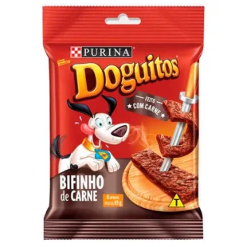

Petisco Natural para Cães

Preço: R$ 8,90
Especificações do Produto:
- Marca: Purina
- Peso: 65 g
- Indicação: Cães de todos os portes e idades
- Sabor: Carne
- Composição: Carne mecanicamente separada de frango (27%), carne bovina (2%), miúdos de bovinos, miúdos de suínos, proteína texturizada de soja, cloreto de sódio (sal comum), açúcar, propilenoglicol, aroma de fumaça, pimenta preta, glutamato monossódico, sorbato de potássio, tripolifosfato de sódio, antioxidante BHT